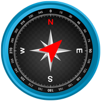

Indice UV
3
Température de l'eau

15°C
Température exterieure

16°C
9km/h
Nord Nord Ouest
Rafales 43km/h
Aller bronzer après le travail, faire une partie de beach volley ou simplement piquer une tête, c’est ce qui vous attend à Marseille. En effet, elle est de ces villes qui permettent à la fois une vie urbaine intense et des moments de détente grâce à ses plages. De passage, il vous sera difficile de choisir entre une plage de sable, de graviers ou de roche. Mais les initiés connaissent les meilleurs plages et certaines adresses reste encore un peu secrètes afin de préserver leur environnement naturel. Le long de la corniche Kennedy, au Prado ou à la Pointe Rouge vous n’aurez que l’embarras du choix pour poser votre serviette, y planter votre parasol et vous détendre.
3
15°C
16°C
Nord Nord Ouest
Rafales 43km/h
La côte marseillaise s’étire du sud au nord, alternant plages de sable, de graviers ou de roche.
Plage de sable
Plage de galets et graviers
Plage de roches
Les plages de Marseille, accessibles très facilement en bus, vous réserves de belles activités, du bronzage à la baignade et au farniente. Plage surveillée ou non, petits galets ou anse de sable fin, calanques ?
Entre le Vieux-Port et tout le long de la Corniche Kennedy, plusieurs plages de sable de Marseille et criques attendent votre serviette. La plus connue et la plus proche du centre-ville : la plage des Catalans. Pour bronzer tranquillement, cap sur les petites plages de Marseille comme l’anse du Bain des Dames et l’anse de la Bonne Brise. Les plages du Prado sont les plus populaires de Marseille. La plage de la Pointe Rouge est idéale en famille pour s’amuser en toute sécurité. Bonne baignade sur les plages marseillaises !
plage des Catalans est une plage de sable, la plus proche du Vieux Port, en contrebas du club sportif Le Cercle des Nageurs des Nageurs.
En savoir +C’est la plus grande plage de Marseille, même si on pourrait plus parler d’une succession de plages sur des kilomètres entre celle du David
En savoir +Les pieds dans l’eau en plein centre ville de Marseille, Malmousque est un village du 7e arrondissement recelant de nombreux trésors du Marseille d’antan.
En savoir +Sur la Corniche Kennedy, en contrebas de la route se trouve la plage du Prophète, l’une des plus anciennes plages de Marseille et l’une des plus populaires aussi.
En savoir +Juste après le parc balnéaire du Prado se trouve la Pointe Rouge. A proximité du petit port du même nom qui propose de nombreuses activités nautiques.
En savoir +La « mini-plage » bordée de cabanons se situe aux Goudes face à l’île Maïre, le vertigineux rocher torturé qui marque l’entrée de la baie de la cité phocéenne.
En savoir +La petite plage de la Maronaise est située dans l’anse du même nom, juste avant le Cap Croisette, entre les Goudes et à deux pas de la Baie des Singes.
En savoir +